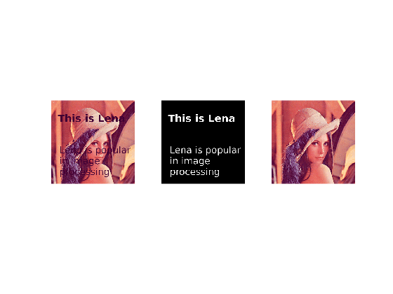
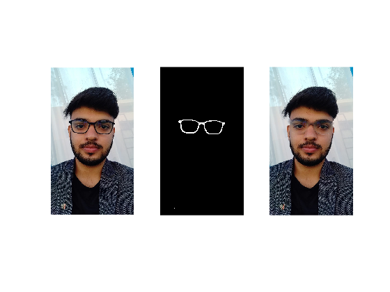
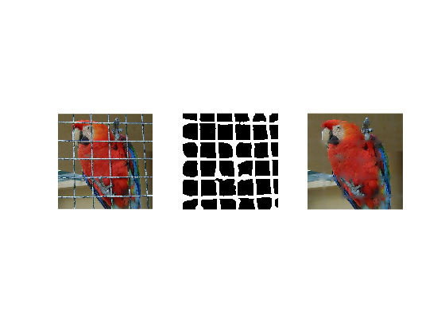
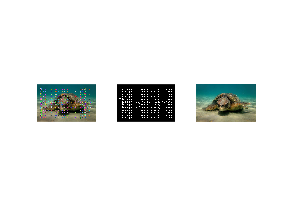

Contents
Reading Data
clear;
load("./Dataset/Lena_Text_Mat.mat");
Lena_Text = Input;
load("./Dataset/Lena_Mask_Mat.mat");
Lena_Mask = Mask;
load("./Dataset/Panku_Mat.mat");
Panku = Input;
load("./Dataset/Panku_Mask_Mat.mat");
Panku_Mask = Mask;
Parrot = imread("./Dataset/parrot.ppm");
Parrot = double(Parrot);
Parrot_Mask = imread("./Dataset/parrot_mask.pgm");
Parrot_Mask = double(Parrot_Mask);
load("./Dataset/Turtle_mat.mat");
Turtle = Input;
load("./Dataset/Turtle_mask_mat.mat");
Turtle_Mask = Mask;
Lena image inpainting
tic;
img = Lena_Text;
for i=1:10
img = PDEone(img,Lena_Mask,11,10000);
end
toc;
figure;
subplot(1,3,1);
imshow(mat2gray(Lena_Text));
subplot(1,3,2);
imshow(mat2gray(Lena_Mask));
subplot(1,3,3);
imshow(mat2gray(img));
Elapsed time is 111.131496 seconds.

Pankaj inpainting
figure;
tic;
img = Panku;
for i=1:10
img = PDEone(img,Panku_Mask,11,10000);
end
toc;
figure;
subplot(1,3,1);
imshow(mat2gray(Panku));
subplot(1,3,2);
imshow(mat2gray(Panku_Mask));
subplot(1,3,3);
imshow(mat2gray(img));
Elapsed time is 39.453916 seconds.

Parrot inpainting
tic;
img = Parrot;
for i=1:10
img = PDEone(img,Parrot_Mask,11,10000);
end
toc;
figure;
subplot(1,3,1);
imshow(mat2gray(Parrot));
subplot(1,3,2);
imshow(mat2gray(Parrot_Mask));
subplot(1,3,3);
imshow(mat2gray(img));
Elapsed time is 393.925731 seconds.

Turtle inpainting
tic;
img = Turtle;
for i=1:10
img = PDEone(img,Turtle_Mask,11,10000);
end
toc;
figure;
subplot(1,3,1);
imshow(mat2gray(Turtle));
subplot(1,3,2);
imshow(mat2gray(Turtle_Mask));
subplot(1,3,3);
imshow(mat2gray(img));
Elapsed time is 91.940243 seconds.
